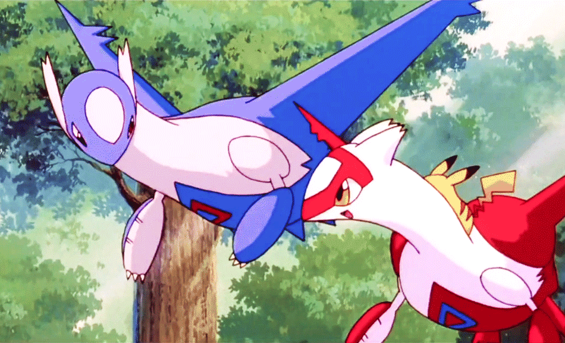
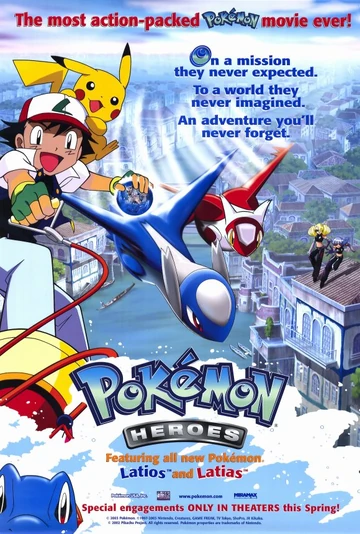
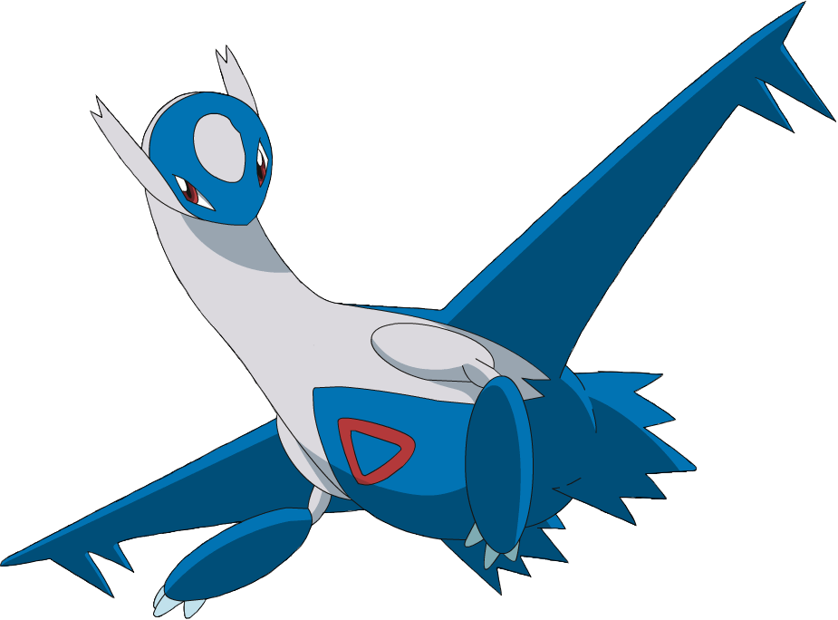
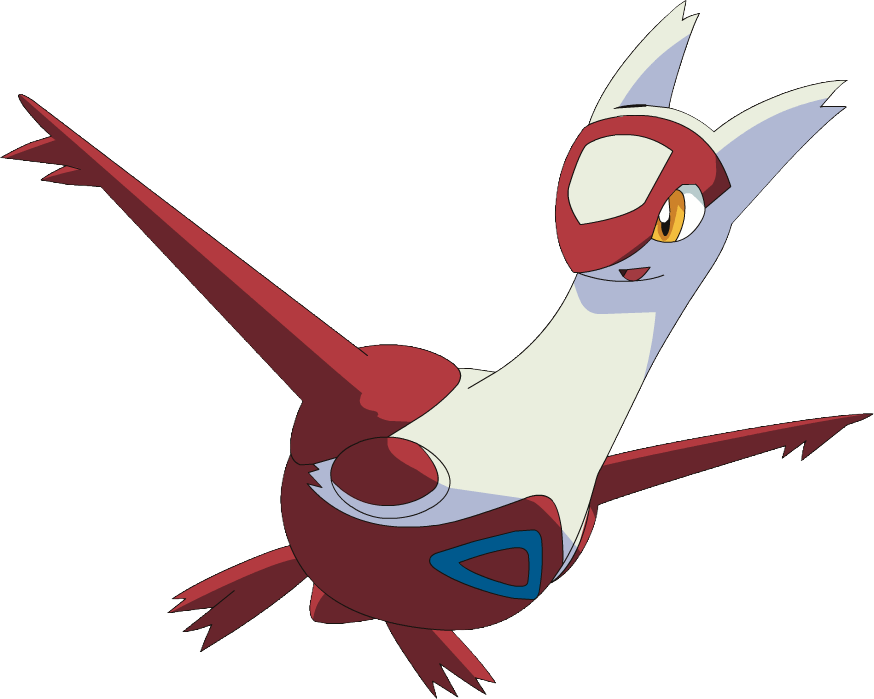
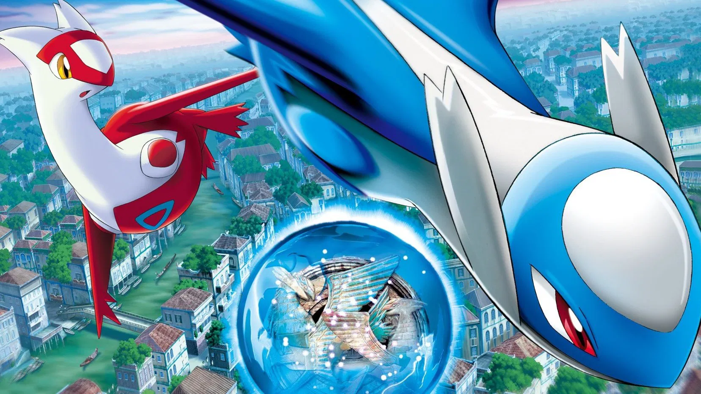
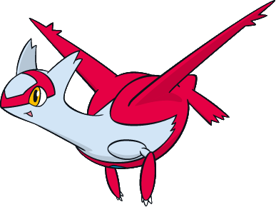
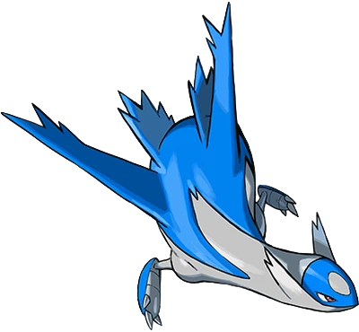
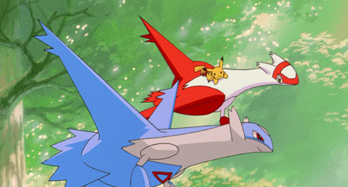

Pokémon Heroes: Latios and Latias (2002) follows Ash, Pikachu, Misty, and Brock to Alto Mare, a canal city protected by the Legendary Pokémon siblings Latios and Latias. When thieves Annie and Oakley steal the protective jewel, the Soul Dew, they trigger a machine that threatens to destroy the city. Latias enlists Ash to help save her captured brother and restore safety to Alto Mare.


Every year the city of Alto Mare holds a special Water Pokémon race through its canal streets—and this time around, Ash and Misty are top competitors! Even though he doesn't win, Ash still finds his own special place in the heart of a mysterious girl that he rescues from two roguish women. But this isn't any ordinary girl—it's actually the Legendary Latias in disguise!

About The Legendaries...

The younger, more curious of the Eon duo. Latias is known for her playful nature and her "Sight" Sharing ability, which allows others to see what she sees. Personality: Innocent and trusting. She is fascinated by humans, often disguising herself as a girl named Bianca to wander the streets of Alto Mare. Role: She forms a deep, psychic bond with Ash, leading him to the Secret Garden and eventually seeking his help to save her brother.

The solemn protector of the Secret Garden and the Soul Dew. Latios is much more cautious and protective than his sister. Personality: Brave, selfless, and initially wary of outsiders. He values the safety of Alto Mare above his own life. Role: When the DMA (Defense Mechanism of Alto Mare) is activated, Latios endures immense pain to protect the city, ultimately making the ultimate sacrifice to stop a massive tidal wave.
Who Wil Your Favorite Be?
